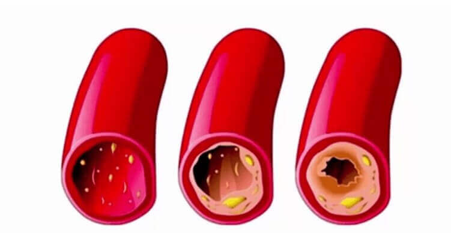

Objev českých vědců zcela změnil přístup k léčbě hypertenze. Nyní se můžete nezávisle zbavit tlakových rázů za pouhých 28 dní.
Hypertenze je nejnebezpečnější nemoc na světě. Jen v Evropě každoročně na ni nebo na její následky zemře více než 5 milionů lidí! Nikdo není imunní vůči této nemoci - dříve či později se to stane 98% lidí nad 50 let.
Díky nejnovějšímu výzkumu českých vědců bylo možné zjistit skutečné příčiny hypertenze a nabídnout jedinečný způsob jejich odstranění. Skvělá věc na této zprávě je, že již nemusíte brát drahé léky s veškerým chemickými položkami, abyste se zbavili příčin hypertenze! Hypertenzi lze léčit stejným způsobem jako ve starověku. Vědci vrátili tuto příležitost zpět do dnešní reality. A došlo k opravdové revoluci v léčbě nejen hypertenze, ale i dalších kardiovaskulárních onemocnění.
Můžete tedy vyléčit následující nemoci:
- Ateroskleróza
- Ischemická choroba srdeční
- Trombóza
- Tromboflebitida
- Arytmie a angina pectoris
- Nestabilita srdečního rytmu
- Poruchy krvetvorby (anémie)
- Flebeurysm
Na setkání s novináři byl objev českých vědců komentován kardiologem, lékařem nejvyšší kategorie, profesorem Pavlem Vodárkem.
Novinář: Jak nebezpečný je vysoký krevní tlak?
Pavel Vodárek:vysoký krevní tlak je samozřejmě nebezpečná patologie. Srdce se rychle opotřebovává a cévy se stávají křehkými, což zvyšuje riziko prasknutí. Ruptura mozkových cév je mozková mrtvice, infarkt. Obě nemoci jsou smrtelné.
Vysoký krevní tlak je navíc nebezpečný, protože krevní sraženina v cévě se může odlupovat a bránit průtoku krve. Což je také plné fatálních komplikací.
Vysoký krevní tlak rychle vyčerpá celé tělo. Proto je hypertenze často doprovázena chorobami, jako je:
- slepota
- srdeční selhání
- selhání ledvin
- ateroskleróza
- nemoci kloubů a páteře
- impotence
- mozková ischemie
Samozřejmě je potřeba se zbavit hypertenze. A musíme to udělat co nejdříve po objevení.
Novinář: Proč léky, které jsou dostupné v lékárnách, nemohou léčit hypertenzi?
Pavel Vodárek: Většina lékárenských léků je hypotenzních, jejich působení je zaměřeno na odstranění příznaků patologie, vysokého krevního tlaku. Mají pouze krátkodobý účinek. Jakmile to skončí, tlak znovu stoupne. Proto by se léky na hypertenzi měly užívat po celý život.
Kromě toho se tolerance k těmto lékům rychle rozvíjí a poté musí být nahrazena jinými. Funkce antihypertenziv je chránit člověka před vysokým krevním tlakem, ale samotnou hypertenzi neléčí. Pokud se chcete nemoci úplně zbavit, musíte použít jiné prostředky.
Novinář: v čem se spočívá objev českých vědců v léčbě hypertenze?
Pavel Vodárek:Vědci z Českého institutu pro kardiovaskulární výzkum zjistili, že hypertenze je výsledkem infekce cév specifickým typem cholesterolu. V jistém smyslu to poněkud připomíná tuk ve studené vodě; během života se cholesterol hromadí ve vnitřních stěnách cév ve stále silnější vrstvě. Výsledkem je obtížné prokrvení žil a tepen. Aby bylo zajištěno dostatečné zásobení vnitřních orgánů krví, je srdce nuceno zvyšovat krevní tlak. Tak se vyvíjí hypertenze související s věkem.
Čeští vědci zjistili, že usazeniny cholesterolu mohou být zničeny polynenasycenými mastnými kyselinami: Omega-3, Omega-6, Omega-9. Před stanovením optimálního poměru těchto kyselin pro účinnou kontrolu hladiny cholesterolu bylo provedeno více než 120 rozsáhlých experimentů. Ukázalo se, že tento poměr je 1: 3: 10. Na základě tohoto objevu a provedené práce byli 3 zaměstnanci Českého institutu srdce a kardiovaskulárního systému nominováni na Nobelovu cenu za medicínu.
Jedná se o velmi důležitý objev, protože umožňuje úplnou stabilitu hladiny krevního tlaku. Nejen ho snížit, chci to zdůraznit. Po měsíci užívání omega-nenasycených mastných kyselin v poměru 1: 3: 10 se tlak úplně zastaví. Člověk nebude muset brát léky na hypertenzi, posílí své zdraví a prodlouží život.
Novinář: Sdělte nám, jaké léky je třeba užívat k léčbě hypertenze.
Pavel Vodárek:Jak jsem řekl, nenasycené omega mastné kyseliny v poměru 1: 3: 10 jsou potřebné k čištění cév a léčbě hypertenze. V tomto poměru se v přírodě nacházejí v semenech rostlin. Vědcům se podařilo získat preparát ze semen , ve kterém jsou uvedené kyseliny obsaženy ve správném poměru a v množství dostatečném pro ošetření.
Vědci požádali dobrovolníky o užívání proti hypertenze. Výsledky překvapily všechny, můžeme říci, že lidstvo našlo lék na hypertenzi!
Chci vám ukázat výsledky českého testu. Zúčastnilo se jich celkem 2 182 dobrovolníků. Všichni trpěli hypertenzí a užívali po dobu 28 dnů.
Výsledky testů
- Cholesterol a další kontaminující látky v kardiovaskulárních cévách byly zcela vyloučeny u 96% testovaných
- Úroveň „špatného“ cholesterolu v krvi poklesla u 98% testovaných
- Tlak se stabilizoval na normální u 94% testovaných
- Bolesti hlavy zmizely u 99% testovaných
- Zlepšení zraku u 74% testovaných
Novinář: Kdy bude k dispozici v lékárnách v naší zemi?
Pavel Vodárek: Faktem je, že pro prodej prostřednictvím lékáren je zapotřebí velké množství preparátu a extrakt ze semen se v současné době vyrábí v omezeném množství kvůli nedostatku těchto semen v naší zemi. Podle nejoptimističtějších předpovědí, se v lékárnách objeví až v roce 2022.
V současné době (a myslím, že to vydrží ještě několik let) lze objednat pouze na oficiálních webových stránkách výrobce.
Co se týče ceny ... V tuto chvíli je minimální, protože výrobce prodává přímo, bez prostředníků. Proto je tato metoda léčby hypertenze k dispozici všem. lze užívat bez lékařského předpisu.
Jediná věc, kterou si musíte pamatovat, je to, že se prodává v omezeném množství a požadavky rostou každým dnem exponenciálně, protože stále více lidí slyší o jeho zázračných vlastnostech. Proto doporučuji všem, aby co nejdříve podali žádost o lék, který je stále na skladě.
Doporučeno Světovou zdravotnickou organizací

Comentarios
Natalia Reyes
Gracias. Hice el pedido del aceite de . Voy a curarme. Mi presión a menudo se eleva.
Jessica Godoy
También hice pedido
Salomón Cabrera
Yo soy uno de los que ya hemos probado este. Tuve hipertensión. ¡Hubo y desapareció! Ahora me siento completamente saludable. La presión no se aumenta en absoluto.
Ana Puertas
¡Muchas gracias por el “ ”! Mi presión tenía altibajos constantemente, pensé que me iba a morir. Las tabletas usuales no me ayudaron mucho. Entonces vi este artículo e hice pedido del aceite. Lo he estado tomando hace solo una semana, y mi presión ya ha vuelto a la normalidad.
Miguel Cortés
Tengo 50 años. El lo probé el año pasado. A mí también me salvó. La presión ha dejado de elevarse, y ahora estoy constantemente involucrado en ejercicios físicos, ¡y trato de comer de una manera más adecuada! Para todos los que no lo habéis probado, os recomiendo este aceite.
Luis Bonnet
Leí los detalles sobre en el sitio web oficial. ¡Es impresionante!
Elena Herrera
Hola a todos. Acabo de visitar el sitio web de este Instituto de cardiología, ¡realmente quedan pocos paquetes! Parece que tenemos muchos hipertensos.
Claudia Lema
La hipertensión es realmente una enfermedad terrible. Más que nada me fastidiaba el ruido constante en los oídos. Es una pesadilla. Me dolía la cabeza todo el tiempo, la presión a veces era simplemente alucinante. Y la somnolencia me torturaba. Las cápsulas de .
Esteban Bustos
es un excelente remedio contra el aumento de la presión. Me curé con su ayuda. Mi presión ha dejado de aumentarse 5 días después del inicio del consumo. Dejé de beber pastillas. Me siento excelentemente bien.
Sofia Roldán
En un periódico leí sobre el para el tratamiento de la hipertensión. También escribieron que es un gran avance en dicho tratamiento. Intentaré hacer pedido
Eduardo Sosa
Ayer lo recibí del mensajero. Logré hacer el pedido a tiempo
Henry Luna
Durante la mitad de mi vida mi presión arterial era alta. Siguiendo el consejo de un médico amigo, comencé a tomar . Como resultado, durante varios meses mi presión se mantiene dentro de 110/70, 120/ 80. ¿Por qué esta planta no se usaba anteriormente para el tratamiento de enfermedades cardiovasculares? Tanta gente ya ha muerto
Angela Contreras
Gracias. Es muy interesante. Hice solicitud. Espero que el medicamento no se haya acabado. Sin este, no sé con qué más me podría curar.
Arturo Adames
¡Gracias!